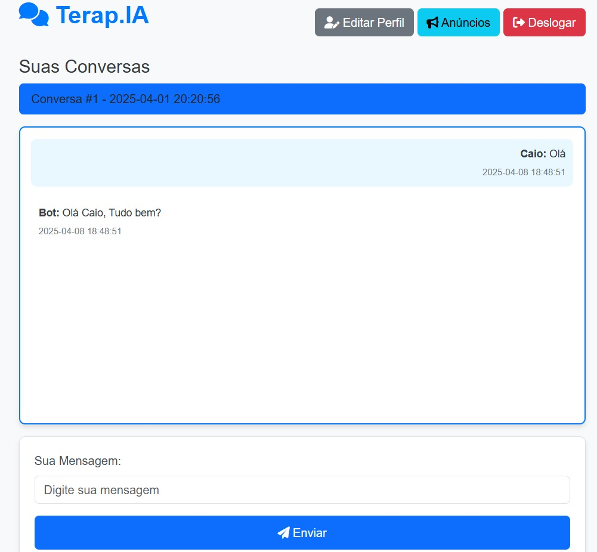

Terap.ia é uma assistente virtual desenvolvida com inteligência artificial,
criada para oferecer acolhimento inicial e orientação emocional de forma prática,
segura e confidencial. Com linguagem empática e tecnologia de ponta, a Terap.ia
está disponível 24h para ajudar você a compreender melhor suas emoções e encontrar
o suporte ideal para o seu bem-estar.
A Terap.IA está sempre disponível para ouvir você com empatia e atenção.
Respostas construídas com base em práticas da psicologia e IA avançada.
Seus dados são criptografados e tratados com total confidencialidade.
A Terap.IA é uma aplicação desenvolvida por um grupo de estudantes da faculdade, com o objetivo de oferecer suporte emocional e orientação inicial utilizando inteligência artificial. Este projeto combina tecnologia de ponta com práticas psicológicas para criar uma experiência acessível e segura para todos os usuários.
Nosso time é composto por alunos dedicados que acreditam no poder da tecnologia para transformar vidas. A Terap.IA é um exemplo de como a inovação pode ser usada para promover o bem-estar e a saúde mental.
Veja como a Terap.IA funciona:
